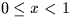

Next:
SLA_RANGE - Put Angle into Range
Up:
SUBPROGRAM SPECIFICATIONS
Previous:
SLA_PXY - Apply Linear Model
SLA_RANDOM - Random Number
ACTION:
Generate pseudo-random real number in the range .
CALL:
R = sla_RANDOM (SEED)
GIVEN:
SEED
R
an arbitrary real number
RETURNED:
SEED
R
a new arbitrary value
sla_RANDOM
R
Pseudo-random real number .
NOTE:
The implementation is machine-dependent.
Next:
SLA_RANGE - Put Angle into Range
Up:
SUBPROGRAM SPECIFICATIONS
Previous:
SLA_PXY - Apply Linear Model
SLALIB --- Positional Astronomy Library
Starlink User Note 67
P. T. Wallace
12 October 1999
E-mail:ptw@star.rl.ac.uk